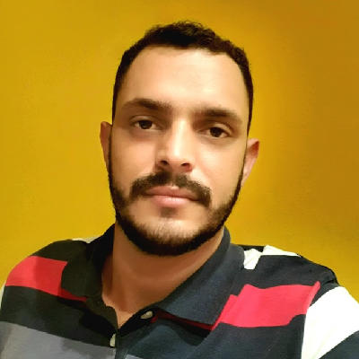

- Home
- >
- Currículo
Currículo
Dados Pessoais

Nome:
William Ribeiro da Costa
Data de Nascimento:
16/06/1993
Residência:
Recife PE, Brasil
Idiomas:
Português (Nativo)
inglês Fluente
Espanhol Básico
Sobre Mim
Sempre fui apaixonado por tecnologia. Há aproximadamente 1 ano eu decidi dar uma virada total na minha carreira. De deixar a área comercial e me dedicar aquilo que eu realmente gosto. Foi então que comecei estudar algumas linguagens como HTML, CSS e também JavaScript, onde possuo um amplo conhecimento hoje. Posso dizer que gostei mais do que eu imaginei. Então investi em cursos, para me aprofundar, consegui criar meu portfolio, consegui criar meus projetos. Então decidi que queria isso para mim e me matriculei na Faculdade para cursar Engenharia de Software. Estou muito empolgado para começar nessa nova jornada da minha vida. Gosto de solucionar problemas, sou comunicativo, focado nos resultados e também gosto de ensinar, trocar conhecimentos. Estou em busca de uma carreira sólida como desenvolvedor FullStack.
Educação
-Em andamento
Engenharia da Computação/Bacharelado/Ampli
11/04/2022 - 11/04/2026
Habilidades
Linguagens
HTML5 / CSS3 / JavaScript
Outras
Resolução de problemas / Comunicação / Foco
Experiência de Trabalho
03/2015 - 03/2020
Vendedor - FastShop - Shopping Recife
04-2021 - 09-2021
Operador de Negócios - Ramos & Silva Correspondente no Pais
Contato
williamrc2022@gmail.com
(81) 98195-3134
Voltar ao início